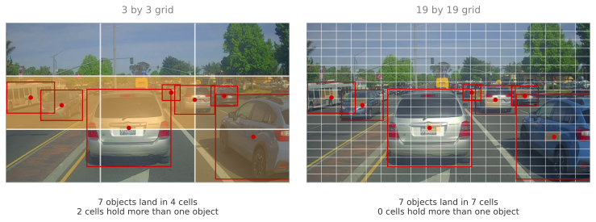
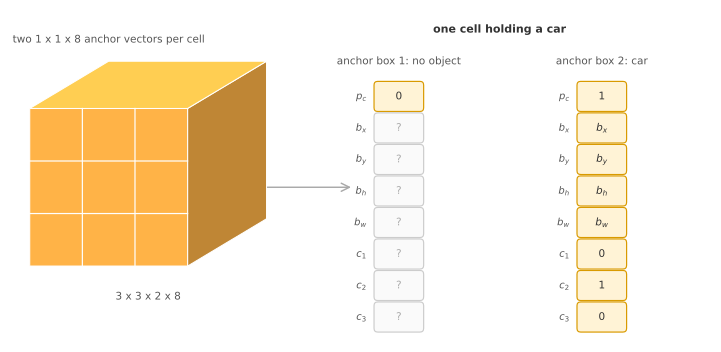
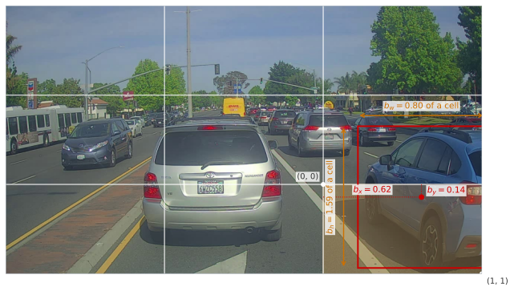

Bounding Box Predictions with YOLO
deep-learning
convolutional-neural-networks
computer-vision
object-detection
yolo
How placing a grid on the image and assigning each object to the cell holding its midpoint turns detection into one convolutional pass with precise boxes.
Sliding Windows and Region Proposals ended on a complaint. The convolutional sweep is fast, but the boxes it can report are the windows themselves, so they sit on a grid whose spacing comes from the pooling layers and they all have the shape of the window. A car is wider than it is tall, and no square window on a coarse grid frames it properly.
YOLO, meaning You Only Look Once, fixes that by asking the network for the box directly. The sweep is replaced by a grid, and every cell of that grid runs the localization idea from Object Localization, predicting its own \(b_x, b_y, b_h, b_w\) rather than choosing among fixed windows.
Grid of Cells
Place a grid over the image. Three by three is the size to think with, and it is far too coarse for real use, where 19 by 19 is typical.
Now picture cutting the photograph into those nine pieces and asking about each piece the two questions from Object Localization. Is there an object here, and if there is, where exactly is it and what is it? Each cell therefore reports the same eight numbers a single object network reported for a whole image. One \(p_c\) saying whether an object is present, four numbers \(b_x, b_y, b_h, b_w\) describing its box, and three components \(c_1, c_2, c_3\) saying which of the three classes it is.
Nothing about the question asked of one cell is new. What is new is that it gets asked at every position at once, and the answers come back arranged in a grid.
The cutting is imaginary, and it is worth being clear that it stays imaginary. The network is not run nine times on nine crops. One network looks at the whole picture a single time and produces an output with nine positions in it, for the reason the last section on this page explains.
Before any of this can be turned into training labels, one awkward question has to be settled. Objects are usually bigger than cells, so a car can cover four of them at once. Which of those four cells is supposed to report it? If all four report it, the same car is detected four times over. If the rule depends on how much of the car falls in each cell, then labeling a training image means measuring overlaps, and cells that catch a bumper argue with cells that catch a roof.
The rule that avoids all of that is the midpoint rule. Find the center of the object’s bounding box. That center is a single point, so it lies in exactly one cell, and that cell is made responsible for the entire object, however far the object spills outside it. Every other cell the object touches reports nothing at all, exactly as if the object were not there.
So a cell can hold a great deal of a car and still be labeled empty. That sounds wrong until you notice what it buys, which is that labeling an image requires nothing but a list of midpoints, with no judgement calls about how much of an object counts.
The red dots are the midpoints, the red rectangles are the objects a detector found in this photograph, and the shaded cells are the ones the midpoint rule makes responsible. The numbers underneath are counted from this picture rather than assumed.
Walk the three by three grid and the rule stops being abstract.
The whole top row is sky, rooftops, and the tops of distant trees. No midpoint falls there, so all three cells are labeled with no object, which is uncontroversial.
The bottom middle cell is more interesting, because it is not empty of car at all. The nearest car spills into it, bumper and shadow included, and yet its label says no object. The reason is arithmetic rather than judgement. That car’s midpoint sits at 0.658 of the way down the picture, and the boundary between the middle and bottom rows sits at \(2/3 = 0.667\), so the midpoint misses the bottom row by nine thousandths of the image height, about six pixels. Ownership goes to the cell above, and the bottom cell reports nothing.
The middle row holds every midpoint in this picture, and that is where the coarse grid runs into trouble. One cell holds the midpoints of three separate cars, and another holds a car and a bus. A cell reports as many objects as it has slots, so a cell with a single eight number slot has to drop two of those three cars.
On the nineteen by nineteen grid the same seven objects land in seven separate cells and nothing has to be dropped. That is the argument for a fine grid, and it is worth being honest that it is a matter of probability rather than a guarantee. A midpoint now has \(19 \times 19 = 361\) cells to land in instead of 9, so collisions become rare, but two midpoints can still share a cell and one object would still be lost.
Review Questions
1. A car spans four cells of the grid. How many cells report it, and which?
TipAnswer
Exactly one, the cell containing the midpoint of the car’s bounding box. The other three cells the car covers report \(p_c = 0\), as if the car were not there at all. Ownership is decided by a single point rather than by overlap, which is what keeps the labeling unambiguous, since a midpoint lies in exactly one cell while an area can be shared by many.
1. The central cell of a three by three grid contains parts of two cars but the midpoint of neither. What is its label?
TipAnswer
The label of an empty cell, \(p_c = 0\) in every slot, with the remaining seven components of each slot ignored as do not care entries. Containing part of an object counts for nothing under the midpoint rule. That is what allows an image to be labeled from nothing but a list of object midpoints, with no need to measure how much of an object happens to overlap each cell, and no argument between neighbouring cells about which of them caught more of the car.
1. Why does moving from a 3 by 3 grid to a 19 by 19 grid help, and what does it not fix?
TipAnswer
It reduces collisions. A cell has a fixed number of slots, two in the version used here, so a third midpoint landing in the same cell means an object is dropped. Spreading the midpoints over 361 cells instead of 9 makes that far less likely. On the photograph above it is the difference between seven objects crowding into four cells, one of which holds three of them, and seven objects occupying seven separate cells. What a finer grid does not fix is the underlying limit, because a cell with two slots still reports at most two objects, so midpoints that coincide remain a problem at any grid size.
1. True or false. When training an object detection system of the kind built here, every image must carry either no bounding box or exactly one.
TipAnswer
False. An image can hold several objects, and the label has to describe all of them, so it carries as many boxes as there are objects.
That is the whole reason for the grid. A single output vector can describe one object, so the network outputs one such vector per cell, and each object is recorded by the cell holding its midpoint. Anchor boxes go further and let a single cell record more than one object.
Target Volume
The reference example gives each cell not one slot but two, and the two slots are called anchor boxes. An anchor box is a shape chosen in advance, before any training happens, and a natural pair to choose is one tall narrow rectangle, roughly the proportions of a standing person, and one wide flat rectangle, roughly the proportions of a car seen from behind. When an object is assigned to a cell, it is put in whichever of that cell’s two slots has the more similar shape. A pedestrian goes in the tall slot, a car goes in the wide slot, and a cell can now report two objects at once rather than one. How that matching is actually measured is the subject of the next page, and for now the only thing that matters is that a cell has two slots rather than one.
Each slot carries the same eight numbers as before, so write one slot as a column.
\[ y^{(a)} = \begin{bmatrix} p_c \\ b_x \\ b_y \\ b_h \\ b_w \\ c_1 \\ c_2 \\ c_3 \end{bmatrix}, \qquad a \in \{1, 2\} \]
Reading that column from the top: is there an object in this slot, where is its midpoint, how big is it, and which class is it. The class components are one hot, meaning exactly one of them is 1 when an object is present, so \(c_2 = 1\) says the object is class 2, a car.
Stacking the two slots gives one cell’s full answer, sixteen numbers.
\[ y_{\text{cell}} = \begin{bmatrix} y^{(1)} \\ y^{(2)} \end{bmatrix} \in \mathbb{R}^{16} \]
There are nine cells in a three by three grid, so the label for the whole image is nine of those sixteen number columns, which is \(9 \times 16 = 144\) numbers in total. Arranged by position, that is a \(3 \times 3 \times 2 \times 8\) volume, and since the last two axes can be flattened into one, the same thing is usually written \(3 \times 3 \times 16\). That is the shape the network is built to output.
Two cells of the photograph above make it concrete. Take the empty cell in the top left corner, which contains only sky, and the cell in the bottom right corner, which owns the car this page annotates later.
\[ \underbrace{\begin{bmatrix} 0 \\ ? \\ ? \\ ? \\ ? \\ ? \\ ? \\ ? \end{bmatrix}}_{\text{anchor 1}} \underbrace{\begin{bmatrix} 0 \\ ? \\ ? \\ ? \\ ? \\ ? \\ ? \\ ? \end{bmatrix}}_{\text{anchor 2}} \qquad\qquad \underbrace{\begin{bmatrix} 0 \\ ? \\ ? \\ ? \\ ? \\ ? \\ ? \\ ? \end{bmatrix}}_{\text{anchor 1}} \underbrace{\begin{bmatrix} 1 \\ 0.62 \\ 0.14 \\ 1.59 \\ 0.80 \\ 0 \\ 1 \\ 0 \end{bmatrix}}_{\text{anchor 2}} \]
\[ \text{top left cell, empty} \qquad\qquad\qquad\qquad \text{bottom right cell, one car} \]
The empty cell sets \(p_c = 0\) in both slots, and every other number in it is a do not care entry, written as a question mark. There is no correct box for an object that is not there, and no correct class either, so the label declines to say and the loss function ignores those entries.
The occupied cell is more informative. Its first slot is empty, because only one object was assigned to this cell and it went to the second slot, the wide one. The second slot has \(p_c = 1\), then the four box numbers, then \(c_1 = 0\), \(c_2 = 1\), \(c_3 = 0\) marking it a car. Those four box numbers are not invented for the example. They are measured from the photograph in the section after next, where 0.62 and 0.14 place the midpoint inside the cell and 1.59 and 0.80 give the size in units of the cell.

The car in this cell goes to anchor box 2, and the reason is worth spelling out, because the numbers look tall. In cell units the box is 1.59 tall and 0.80 wide, but a cell on this photograph is 427 pixels across and only 240 down, so on the ground the box measures about 342 by 381 pixels. It comes out marginally taller than wide because the car runs off the right edge of the frame and its box is clipped with it. Near enough to square is still nothing like the roughly one to two proportions of a standing person, and much closer to a car seen from behind, so the wide slot is the better match. Its anchor-1 vector has \(p_c = 0\) and seven do not care entries. Its anchor-2 vector has \(p_c = 1\), the car bounding box, and \(c_2 = 1\). A cell holding no assigned object has \(p_c = 0\) for both anchors, followed by do not care entries.
Training follows from that. The input is an image, say 100 by 100 by 3, and the target is the \(3 \times 3 \times 2 \times 8\) volume, commonly flattened to \(3 \times 3 \times 16\). An ordinary ConvNet is arranged to produce that shape. Backpropagation then maps input to target as usual, and nothing about the training procedure is special.
Review Questions
1. Why is the target \(3 \times 3 \times 2 \times 8\), and why can it also be written \(3 \times 3 \times 16\)?
TipAnswer
The first two dimensions locate the grid cell. There are two anchor boxes, and each anchor gets one \(p_c\), four box numbers, and three class components, so \(1 + 4 + 3 = 8\). Combining the two anchor vectors gives \(2 \times 8 = 16\), so the same target can be written \(3 \times 3 \times 16\).
1. What target is used for the unused anchor in a cell that contains a car?
TipAnswer
Its \(p_c\) is zero and its remaining seven entries are do not care values. The car is assigned only to the anchor whose shape matches it better, so the other anchor must be taught that it has no object to report.
Boxes Measured Against Their Cell
Four numbers describe a rectangle only once you say what they are measured against. On Object Localization they were measured against the whole image, with the upper left corner of the picture at \((0,0)\) and the lower right at \((1,1)\). Here they are measured against the responsible cell instead. Its upper left corner is \((0, 0)\), its lower right corner is \((1, 1)\), and the box is described in those local coordinates.
That change of reference is not decoration, and the reason is worth pausing on. Every cell has to be answerable by the same function, because one network computes all of them at once with the same filters. If boxes were measured against the whole image, then the identical car photographed in the top left and in the bottom right of the frame would need two completely different answers, and a single set of filters could not produce both. Measured against the owning cell, the answer for that car is the same wherever it appears, and the position information is carried by which cell answered rather than by the numbers themselves.
With that convention in place, the four numbers split into two pairs that behave differently.
\(b_x\) and \(b_y\) give the midpoint in cell coordinates. They always land between 0 and 1, and not by convention but by construction, because the cell was chosen precisely for containing that midpoint. A value outside that range would be a contradiction, since it would describe a point in some other cell.
\(b_h\) and \(b_w\) give the height and width, measured in units of the cell rather than of the image. A value of 1 means exactly as tall or as wide as one cell. These are free to exceed 1, and frequently do, because an object is often bigger than the cell that happens to own its center. There is nothing paradoxical about a cell reporting a box larger than itself, since the cell is only the address at which the answer is filed.

Those numbers are measured from the photograph rather than chosen for the illustration. The midpoint sits at \(b_x = 0.62\) and \(b_y = 0.14\) of the way across and down its own cell, both comfortably inside the unit square. The box is \(b_w = 0.80\) of a cell wide and \(b_h = 1.59\) of a cell tall, so it is taller than the cell that owns it, which is exactly the case the \(0\) to \(1\) restriction on \(b_x\) and \(b_y\) does not apply to.
This is one reasonable convention rather than the only one. The YOLO papers use parameterizations that work slightly better, putting \(b_x\) and \(b_y\) through a sigmoid so they cannot escape the cell, and predicting \(b_h\) and \(b_w\) through an exponential so they cannot come out negative. The version here is easier to read and works acceptably.
Review Questions
1. Why can \(b_x\) and \(b_y\) never fall outside 0 to 1, while \(b_h\) and \(b_w\) regularly exceed 1?
TipAnswer
Because they measure different things. \(b_x\) and \(b_y\) locate the midpoint inside the cell, and the cell was selected because it contains that midpoint, so the values are inside the unit square by construction. A midpoint outside the cell would mean a different cell owns the object. \(b_h\) and \(b_w\) measure the size of the box in units of the cell, and nothing stops an object from being larger than one cell of the grid, as with the car above at 1.59 cells tall.
1. Why measure the box against the cell rather than against the whole image?
TipAnswer
Because every cell then solves the same problem in the same coordinates. The network learns one function that maps the appearance around a cell to a box expressed relative to that cell, and it applies at every position, which is what makes a single convolutional pass produce a grid of answers. Measuring against the whole image would make each cell’s target depend on where the cell sits, so the same object would need a different answer in each position.
1. The papers pass \(b_x\) and \(b_y\) through a sigmoid and \(b_h\) and \(b_w\) through an exponential. What does each choice enforce?
TipAnswer
The sigmoid forces its output between 0 and 1, which is exactly the range a midpoint inside a cell must lie in, so the network cannot predict a midpoint outside the cell that is supposed to own it. The exponential is always positive, so a predicted height or width cannot be negative, which is meaningless for a box. Both encode a constraint the answer must satisfy into the shape of the function rather than hoping training respects it.
One Network, One Pass
Training this is ordinary supervised learning, and it is worth saying so plainly, because the machinery around it can make it look exotic. The input is an image, say 100 by 100 by 3. The target is the \(3 \times 3 \times 16\) volume built above, assembled from nothing but a list of object midpoints, boxes, and classes. In between sits a perfectly familiar stack of convolutional and pooling layers, chosen so that the final output has that shape. Backpropagation then does what it always does, adjusting weights to reduce the difference between the volume the network produced and the volume the label says it should have produced. Everything that looks new about detection lives in how the target is constructed, not in how the network is trained.
At prediction time the same volume is read in reverse. Run the image through once, and for each of the nine positions, and each of the two slots at that position, look at \(p_c\). Where it is near zero, ignore the rest of that slot, since the network is saying there is nothing there. Where it is high, read off the four box numbers, convert them from cell coordinates back into image coordinates, and read the class components to see what was found.
Two properties of this arrangement are the whole reason for it.
The boxes are precise. A cell predicts four real numbers, so it can express any midpoint inside itself and any width and height, at any aspect ratio at all. Nothing is restricted to the shape of a window or to the spacing of a stride, which was exactly the complaint that sliding windows could never answer.
The computation is a single convolutional pass. The nine cells of a three by three grid, or the 361 cells of a 19 by 19 grid, do not mean nine or 361 runs of anything. It is one network, evaluated once, whose output happens to be shaped like a grid, and the work behind neighbouring cells is shared in exactly the way the convolutional implementation shares it. That is why YOLO runs fast enough to process video as it arrives, and a good part of why it became so widely used.
One limitation survives all of this, and the grid alone was never going to solve it. A cell has as many slots as there are anchor boxes, so with two anchors it reports at most two objects. On the photograph above, one cell of the three by three grid holds three car midpoints, which is one more than the slots available, so even with anchor boxes a car is dropped. A finer grid makes that rare rather than impossible, and two objects with nearly identical shapes can also compete for the same slot. Handling those cases properly, and cleaning up the duplicate boxes a real network produces around every object, is what the next page takes up.
Review Questions
1. In what sense does YOLO evaluate the grid without running anything 361 times?
TipAnswer
The grid is the shape of the output, not a loop over regions. One ConvNet takes the whole image and produces a \(19 \times 19 \times 8\) volume in a single forward pass, so the answers for all 361 cells come out together, with the convolutions computing shared responses once and every cell reading what it needs. Running the network per cell would repeat almost all of that work, which is the difference between something usable on video and something that is not.
1. Sliding windows could not report a box that fitted a car closely. Why can this?
TipAnswer
Because the box is predicted rather than selected. A sweep can only report the window it evaluated, so the reported box has the window’s size and shape and sits at a position on the stride grid. Here each cell outputs four numbers describing a rectangle, so the midpoint can be anywhere inside the cell and the height and width are free, including aspect ratios no window had. The grid decides which cell answers, not what the answer may look like.
References
- Redmon, J., Divvala, S., Girshick, R., & Farhadi, A. (2016). You only look once: Unified, real-time object detection. In 2016 IEEE Conference on Computer Vision and Pattern Recognition (CVPR) (pp. 779-788). IEEE. https://doi.org/10.1109/CVPR.2016.91
NoteReading the Paper
The YOLO paper is worth looking at, and it is also, by common consent, one of the harder papers in this area to follow. Even experienced researchers have reported struggling with the details and resorting to the open source code or to asking the authors. If it does not click on a first read, that is the paper rather than you.